Y80 5-SPD M/T
Y80 5-spd M/T, Clutch Assembly Torque:
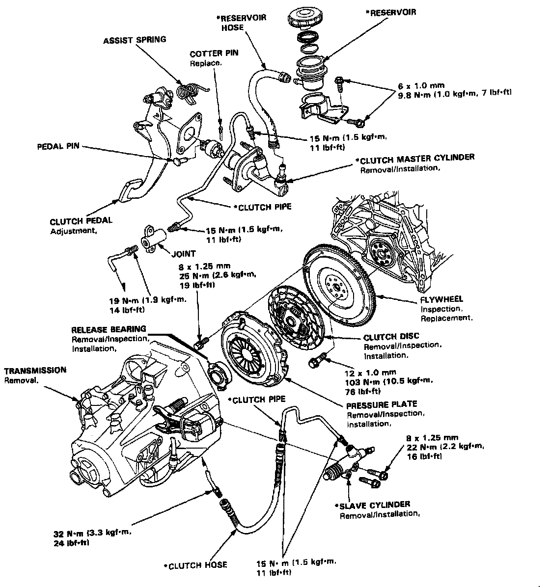
Y80 5-spd M/T, Clutch Pedal:
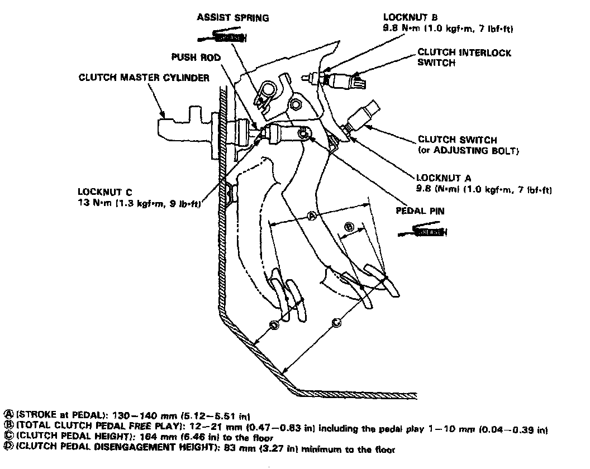
Y80 5-spd M/T, Clutch Master Cylinder:
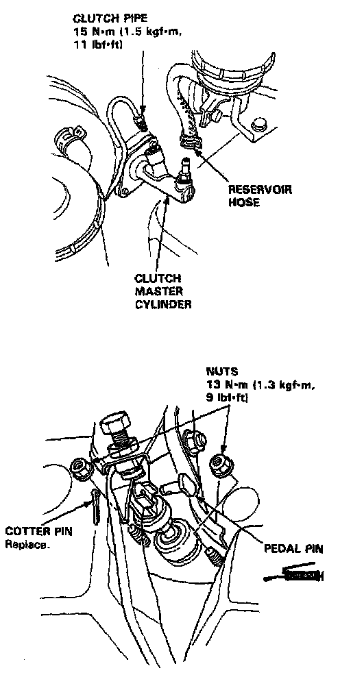
Y80 5-spd M/T, Slave Cylinder:
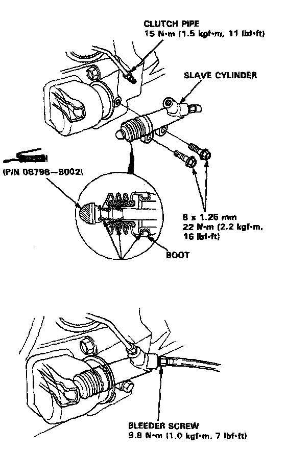
Y80 5-spd M/T, Flywheel Torque & Sequence:
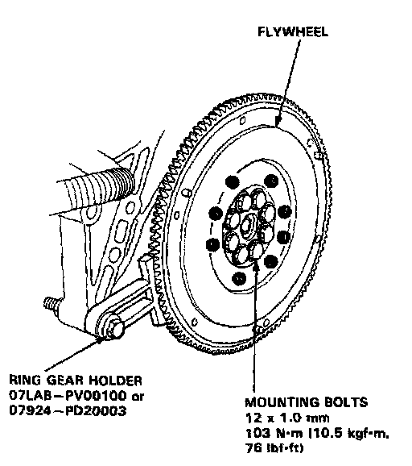
Y80 5-spd M/T, Pressure Plate Torque & Sequence:
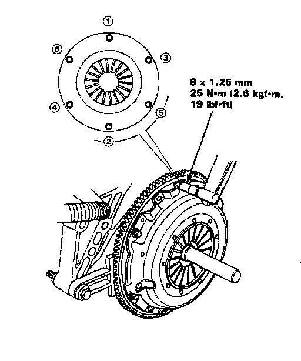
Y80 5-spd M/T, Clutch Release Fork Bolt:
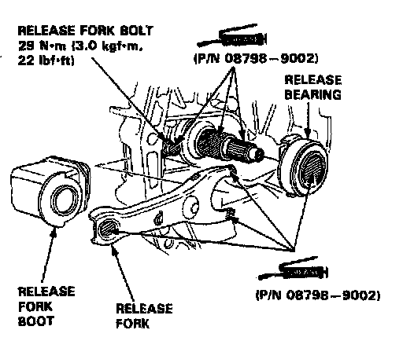
Y80 5-spd M/T, Transmission Assembly (1 Of 2):
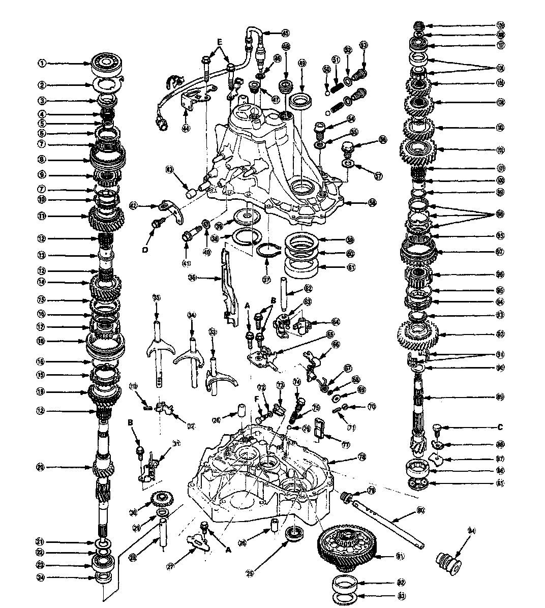
Y80 5-spd M/T, Transmission Assembly Legend (2 Of 2):
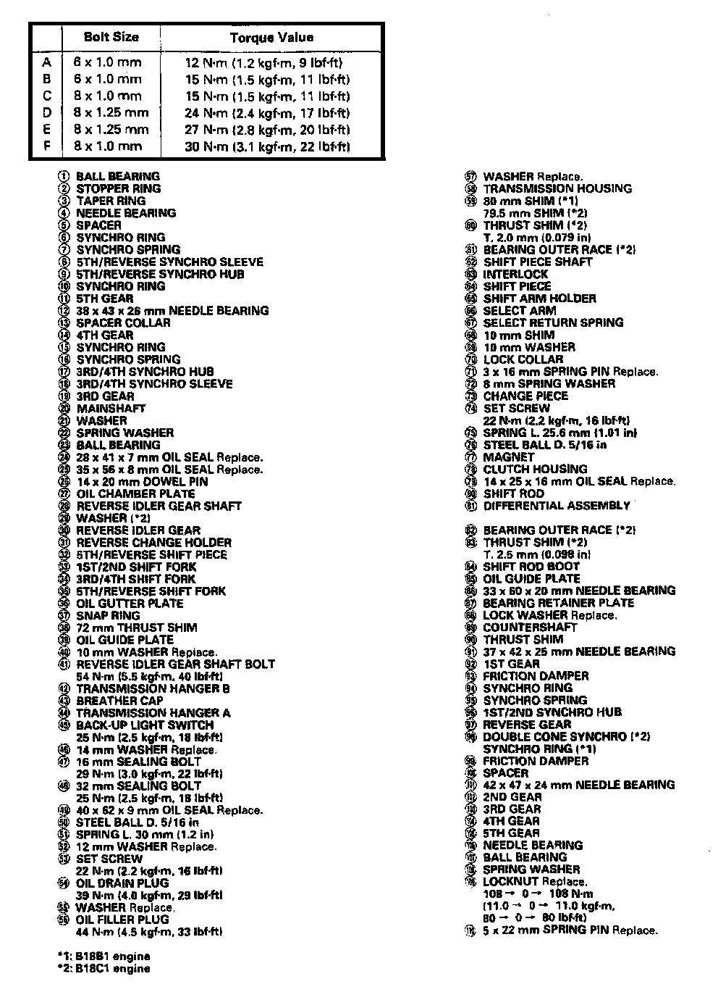
Y80 5-spd M/T, Transmission Assembly:
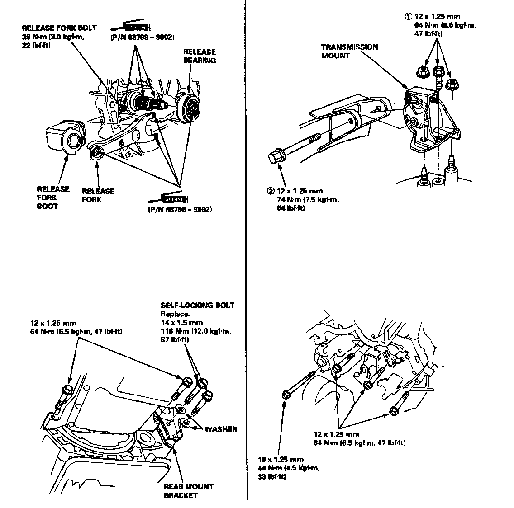
Y80 5-spd M/T, Front Mount / Clutch Cover:
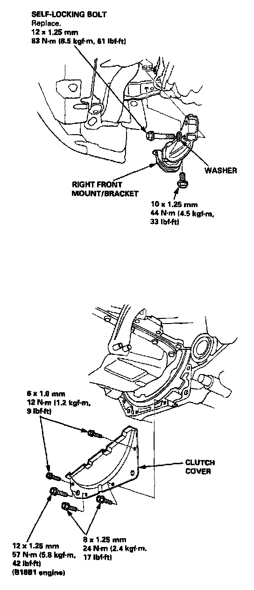
Y80 5-spd M/T, Mounting Stiffeners:
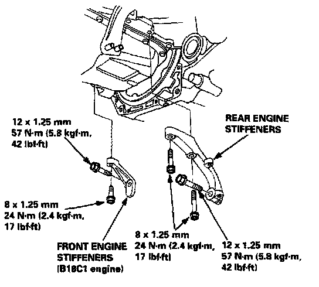
Y80 5-spd M/T, Gearshift Mechanism:
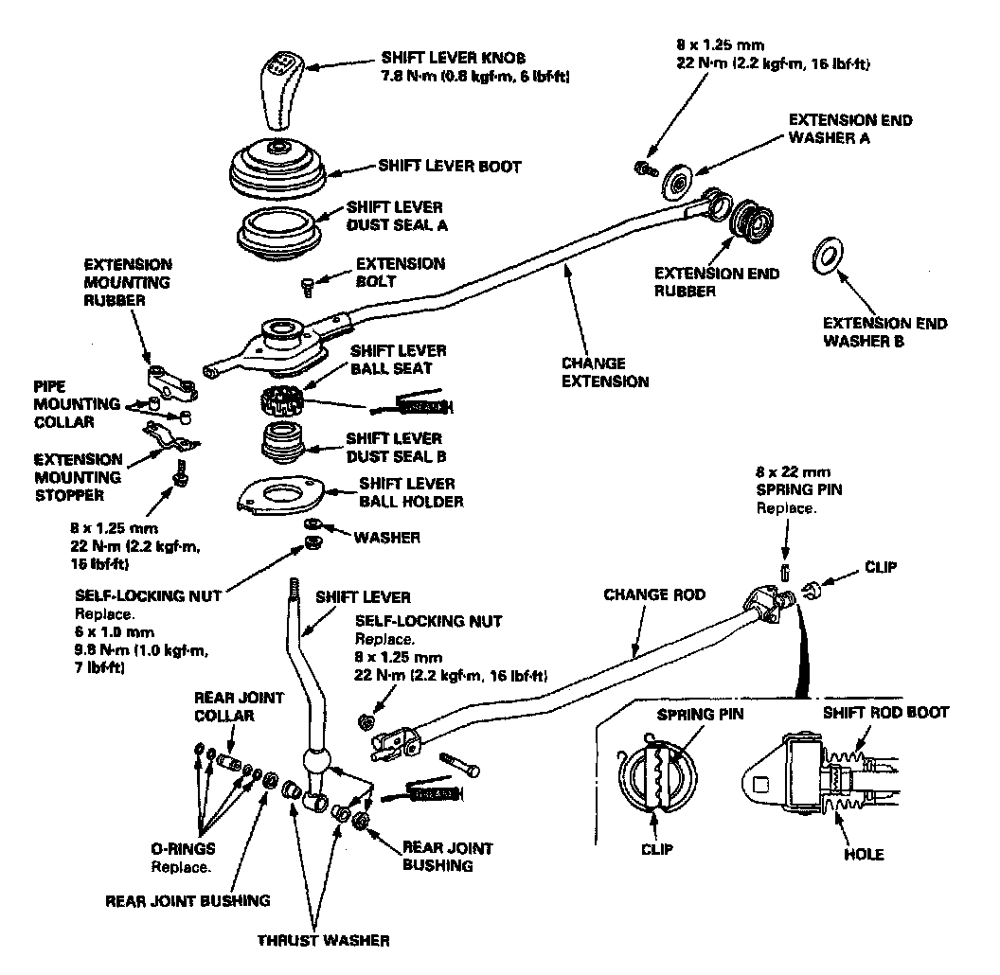